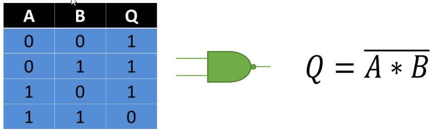

Compuerta Lógica NAND
La compuerta lógica NAND (Not AND) es un tipo de compuerta que produce una salida falsa (0) solo cuando todas sus entradas son verdaderas (1). En cualquier otro caso, la salida es verdadera (1).
Propiedades de la compuerta lógica NAND:
| Simetría | La compuerta NAND es conmutativa, es decir, A NAND B = B NAND A. |
| Identidad | A NAND 1 = ¬A (la salida es el complemento de A). |
| Idempotencia | A NAND A = 0 (la salida es siempre 0 cuando ambas entradas son iguales y verdaderas). |
La compuerta NAND se utiliza en circuitos digitales para:
- Construir otras compuertas lógicas (es universal).
- Implementar funciones lógicas complejas.
- En sistemas de control y procesamiento de señales.
Tabla de verdad y fórmula de la compuerta lógica NAND:
